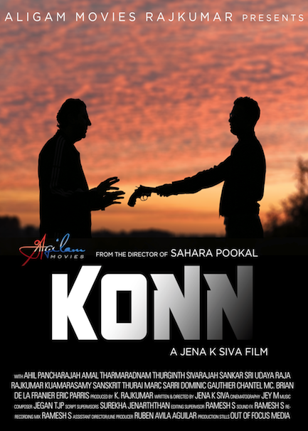

Portfolio Projects
Adae

Visit Adae
By using this platform students could exchange items, goods and services with nearby peers. As Co-Founder of this project, I gained valuable experience in pivoting and working on MVP’s within time & budget constraints. Additionally, I developed the backbone and front-end, teaming up with the designer and mobile developer in constructing an engaging, customer friendly product. Our vision was to foster a community of freelancers that could fulfill the offers or requests of others while avoiding the hassle of cash exchange through the use of a mobile payment application. Through keen customer insight I researched ways to provide the best user experience possible.
Imagemoji

Visit Imagemoji
When I joined Arima, a startup made of other University of Toronto graduates, I was brought in as a Junior Developer to provide support to other programmers in a variety of projects and iterations. Out of these, Imagemoji evolved into the most captivating project and I surfaced as lead front-end developer. I was tasked with repurposing and reconfiguring a completely different web application into an image sharing community platform. Although daunting, I combined my new skills with user insight to design and implement interactive features, crafting an attractive and enjoyable community platform.
KONN
As Assistant Director I acted as faliciltator to Jena K. Siva by developing a shooting schedule and administering production logistics. This resulted in succesfully maintaining budget requirements while keeping the production’s two-week shoot deadline. I handled many external duties including casting, crew management, publicity and marketing. Additionally, I performed Assistant Editor duties throughout the months of post-production leading to the premiere.
